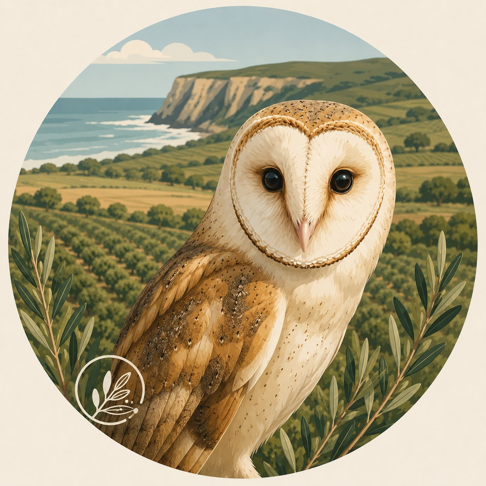

Fundada em 2004, a AHSA reúne cerca de 40 empresas agrícolas que operam no Perímetro de Rega do Mira, nos concelhos de Odemira e Aljezur. A nossa missão é representar um setor hortícola inovador e resiliente, focado no desenvolvimento equilibrado do território.

Estou aqui para esclarecer todas as suas dúvidas sobre a agricultura sustentável, o uso inteligente da água e os nossos projetos na região do Sudoeste Alentejano.